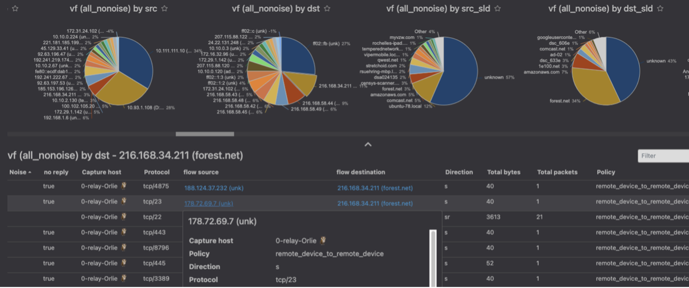
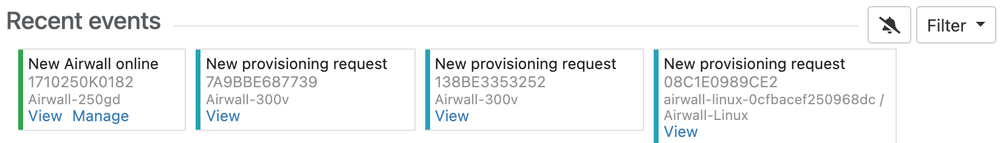
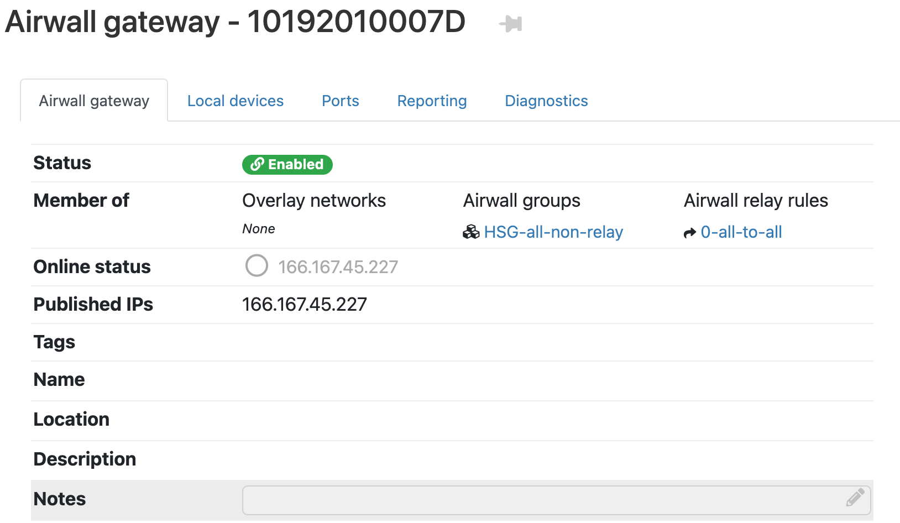

What's New in 2.2.11
Here are the new features and enhancements in this version.
Mirror network traffic for Packet Analyzers
You can now mirror network traffic to packet analyzer/visibility tools (like Nozomi or Wireshark) to see what’s going on in your Airwall secure network.
See more: Mirror traffic from your Airwall Gateways to a packet analyzer tool
Assign Separate DNS Servers to Airwall Agents and Servers
If you need Airwall Agents and Servers to use different DNS servers, you can assign different DNS servers on an Overlay or individually for Airwall Agents and Servers that support it.
See more: Assign Separate DNS Servers to Airwall Agents and Servers
Preview - Airwall Visibility Connector
The Airwall Visibility Connector gives you a dynamic L4 view into the health and status of your Airwall secure network. You can explore many pre-computed reports in the Conductor, and can integrate other threat detection platforms. When configured, the Conductor continuously learns from these external systems, and can report or respond to threats as they are detected.
Contact Customer Success at Customer Success if you would like to preview this feature. A future version will expose the full feature with appropriate documentation, training, and platform options.
New Knowledge Base and Support Site
Tempered has a new site for our product Knowledge Base articles and support. Update your links!
- New Link to open a Support ticket: https://www.tempered.io/support/supportReq.html
- New location for Knowledge Base articles: https://tempered.force.com/TemperedSupportCenter/s/
New and Improved Conductor Features
- Update macOS Airwall Agents from the Conductor
-
In v2.2.11, the macOS Airwall Agent introduces the ability to update from a Conductor package. For those running v2.2.10, upgrade one last time manually, with:
sudo installer -pkg /path/to/Airwall-Mac_2.2.11.xxxx.pkg -target /You can then update future versions from a Conductor update package.
- Clear Recent events on the Dashboard
- On the Dashboard System navigation, you can clear all events by selecting
the Dismiss events icon
 :
: 
- New Notes field on Airwall Edge Service pages
- There is now a place where administrators can add notes on Airwall Edge Service pages:

- Conductor theme now follows you
- Your Conductor theme is now saved across computers and browsers.
- Failover groups improvement
- Failover groups now start with an initial likely selection for underlay link failover configuration.
- OpenID Connect improvement
- OpenID Connect now supports Azure Active Directory (AD).
- Conductor Certificate Expiration reminders
- When a Conductor certificate is near expiration (1 month + 1 week), you get an event and a tag on the cert info that warns you of the upcoming expiration. On the day of expiration, you get an alert, event, and a tag telling you the certificate has expired.
- Download a CSV with Licensing and Airwall Data
- You can download all licensing and Airwall data in CSV format from . This data can be helpful in ensuring your Conductor vouchers are correctly renewed.
- Access Windows Date Selection improvements
- The way you choose dates for Access windows has been improved.
- Airshell Improvements
- You can now save your network configuration when doing a factory reset using the keep-networking option. See Airshell (airsh) Command Reference.
- Alert Improvements
- Intrusion prevention alerts now indicate which devices are the source or destination of the alert where possible. These alerts are in Conductor alerts and indicated by the ID in the event data from the API , and snort metadata will be included in the API.
- Diagnostic Mode Improvements
-
- Diagnostic Report Addition – The Diagnostic report now includes policy-based routing rules and IPv6 routes.
- Return to Diag mode after a hotfix – When applying a hotfix that does not require reboot, when the hotfix is complete you get an option to return to Diag mode.
- API Improvements
-
- API tracks when changes happened – The Conductor API now serializes when many resources were created and updated, and includes These changes make it easier to see when resources were added or have changed from the API.
- New API endpoints – New API endpoints show history of Airwall Edge Services being managed and revoked , and returns a list of devices that each device has policy to and what overlays the policies are in .
- Date time/NTP settings – The API now allows updating of Date time/NTP settings.
New and Updated Help
In addition to the content added for new features linked above, here’s the new and updated content published since our last major release:
New –
Updated –
Introducing our new free offering – Airwall Teams
Airwall Teams allows you to build truly private system-to-system networks—that span public, private, cloud, and mobile networks using an intuitive graphical interface - just draw lines between devices you want to connect. Airwall Teams replaces and expands on our Airnet platform.
See more:
- Sign up – Airwall Teams
- Check out the help – Airwall Teams Help